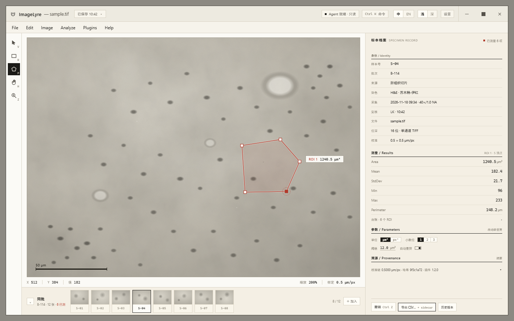
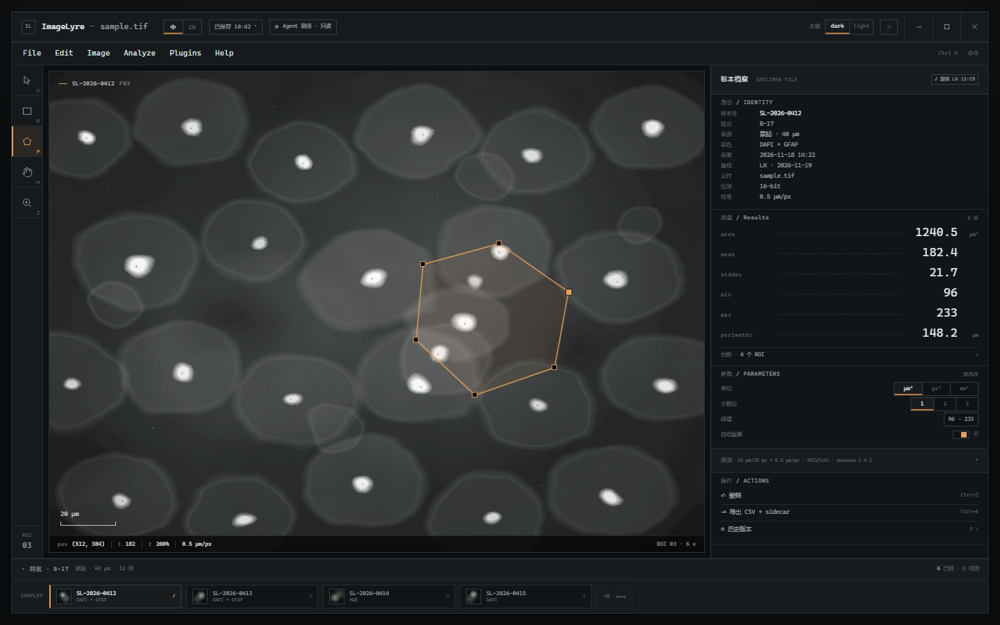
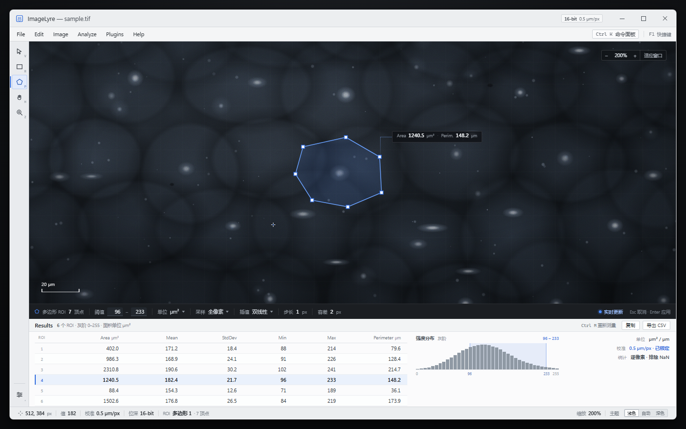
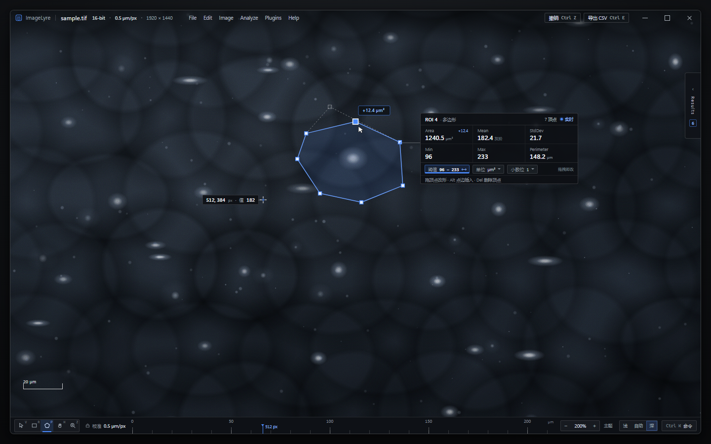
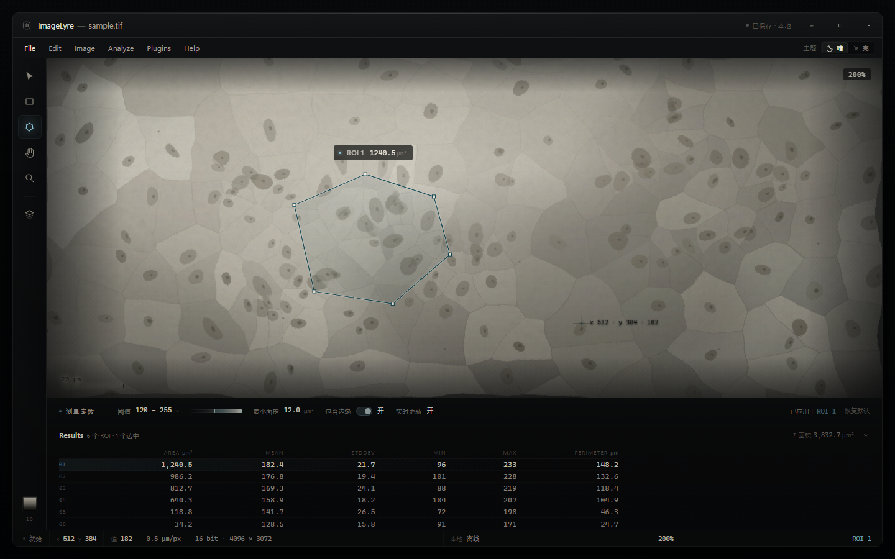
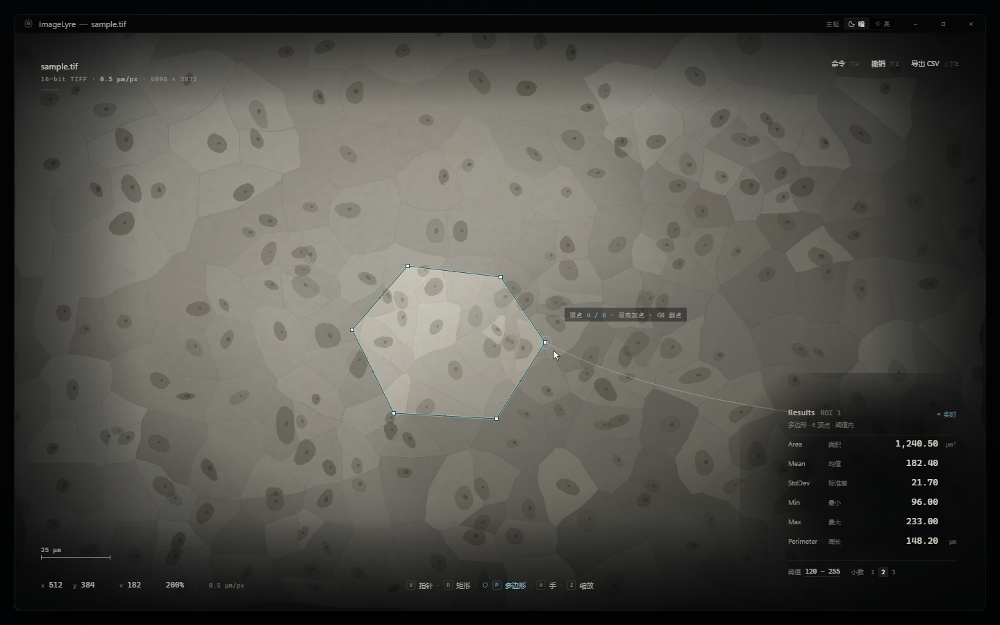
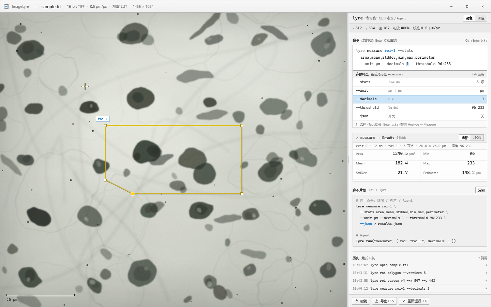
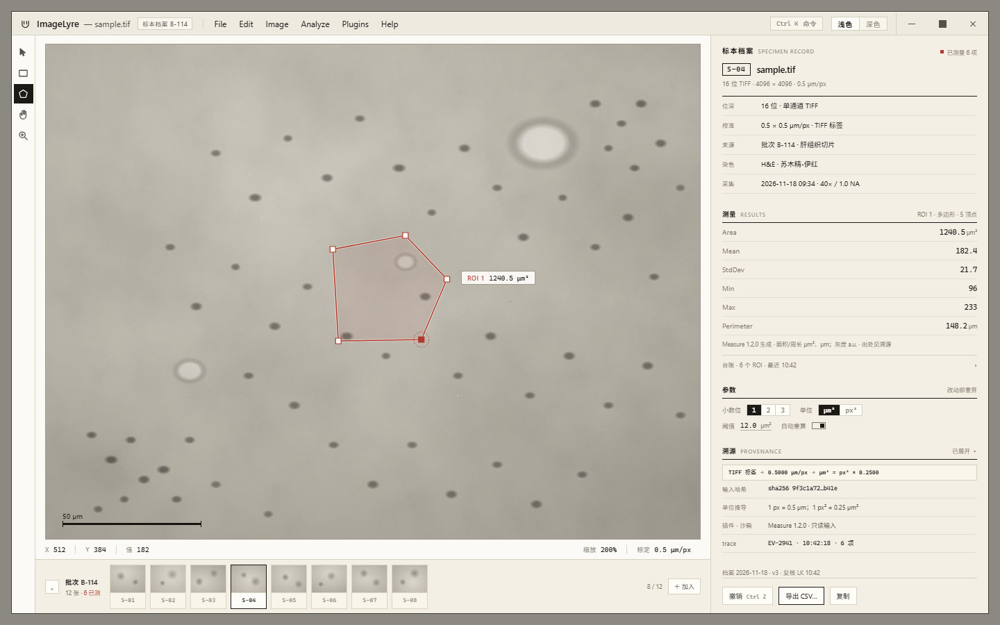

当前基准 · 稿 29

稿 29 · 亮 · 中性底 + 选中改标
标本档案 · 亮（当前）去掉暖纸感，表面改中性白；选中不再黑底反白，改为中性浅底 + 2px 信号标。五段与操作同屏。窗口稿 自述
地基三件已定稿：typography.md 2.0、spacing.md、color-tokens.md。暗色版（25/28）仍卡在右栏高度，先不作为基准；等暗色按 27 的结构收口后再补。
定稿方向 · 稿 21 / 22

稿 21 · 默认亮 · 统一骨架
标本档案 · 亮标题栏补齐语言、已保存、Agent；右栏五段与批次条固定；操作段有导出 CSV + sidecar 与历史版本。窗口稿 自述
稿 22 · 暗主题 · 统一骨架
标本档案 · 暗与 21 同结构、同字段、同入口，只换颜色、明度与材质；Analyze / Image 菜单回到位。窗口稿 自述
21 与 22 是 20/19 的统一骨架版：结构、字段、入口一致，只有颜色与材质不同。19/20 保留为来路，后续以 21/22 为准。
十八版 · 六个人 × 三轮
A · 沈岚
工业设计 / 医疗仪器
信条：仪器不该喊

V1 · 自由布局
稿 01 · 观片灯暗房观片灯，读数像刻度盘。窗口稿
V2 · 去限定
稿 07 · 转塔工具转塔，读数拴在选区旁。窗口稿
V3 · IT 科技
稿 13 · 台账每个数字都带出处：输入哈希、校准链、沙箱、trace。窗口稿
B · Jonas
瑞士平面 / 编辑排版
信条：网格比装饰有力

V1 · 自由布局
稿 02 · 记录页压在观片灯上的记录纸。窗口稿
V2 · 去限定
稿 08 · 引线顶点 P3 到 AREA 的一条朱红引线。窗口稿
V3 · 取景器
稿 14 · 取景器整窗即取景器，四边刻度接管界面。窗口稿

V1 · 自由布局
稿 03 · 游标搁在台面上的卡尺。窗口稿
V2 · 去限定
稿 09 · 尺侧画布吃满，尺子在脚下，读数钉在形上。窗口稿
V3 · Photoshop
稿 15 · 读数台借 Photoshop 的台面，做一台测量仪器。太像 PS，弃。窗口稿

V1 · 自由布局
稿 04 · 暗房关掉顶灯，只留一盏观片灯。窗口稿
V2 · 去限定
稿 10 · 挂签读数像一张系着线的标本签。窗口稿
V3 · Photoshop
稿 16 · 修图暗房直方图管阈值，胶片条管同一批样本。窗口稿
E · 阿米娜
科学可视化 / 期刊制图
信条：能进论文

V1 · 自由布局
稿 05 · 图版显微截图按期刊图版排。窗口稿
V2 · 去限定
稿 11 · 图版与表 1图注与表 1 第 1 行被同一条线钉住。窗口稿
V3 · 标本册
稿 17 · 标本册图、档案卡与索引同屏。窗口稿
F · 陈默
独立开发者 / 开源工具
信条：好工具不表演

V1 · 自由布局
稿 06 · 卡尺用惯的卡尺，每一格都在读数。窗口稿
V2 · 去限定
稿 12 · 命令条菜单缩成脚下一行命令条。窗口稿
V3 · IT 科技
稿 18 · 命令台六个数不是面板，是命令的输出。窗口稿
合体两版 · 溯源 × 档案

合体 · 以 A3 为底，吸收 E3
稿 19 · 标本档案（暗）工程台的密度，档案卡的秩序；哈希、校准链、沙箱与 trace 折进溯源。窗口稿 自述
合体 · 以 E3 为底，吸收 A3
稿 20 · 标本档案（纸）一列五段：身份、六项、参数、溯源；六项下面只挂一行「台账 · 6 个 ROI」。窗口稿 自述
| 维度 | A4 · 暗 | E4 · 纸 |
|---|
| 第一眼 | 工程工作站：深色、等宽、像一台仪器 | 标本档案：纸白、朱红、像一页记录 |
| 溯源位置 | 折叠在右栏底部，需要展开 | 折叠在右栏底部，展开后一条校准链串起哈希与插件 |
| 批次条 | 12 张里 4 张可见 + 更多 | 8 张 S-01…S-08，当前描黑 |
| 工具与命令 | 画面左缘 5 个键 + Ctrl K | 左缘 34px 细条 + 标题栏 Ctrl K |
| 最大风险 | 折叠让「有来路」退到第二眼；右栏下段留白 | 400px 一列四段在 125% 缩放下会挤 |
怎么挑
先选「人」——仪器的可信、编辑的克制、工具的密度、暗房的光、出版的严谨、工匠的朴素；再选「轮」——自由布局、去掉限定、换道后的成熟语言。合体两版已经把「数字的来路」（A3）与「测量的归属」（E3）放在同一屏，剩下要选的是：你要一台暗的工程工作站，还是一页纸的标本档案。
现有判断：E4 做底，A4 做深色模式；溯源默认露一行摘要（校准链 + 哈希前八位 + 插件版本），不全折叠。